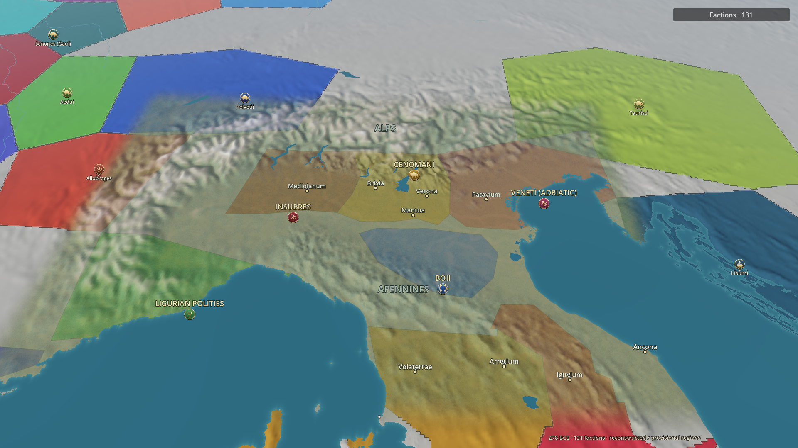

Changes load in the regular Godot instance and are geographically scoped. Ten exact matched cameras. Source boundary coordinates and starting owners are preserved. No new regional boundaries, capitals or gameplay have been activated.
Architecture, validation and remaining problems · Pending regional research groupings · Camera and ownership evidence

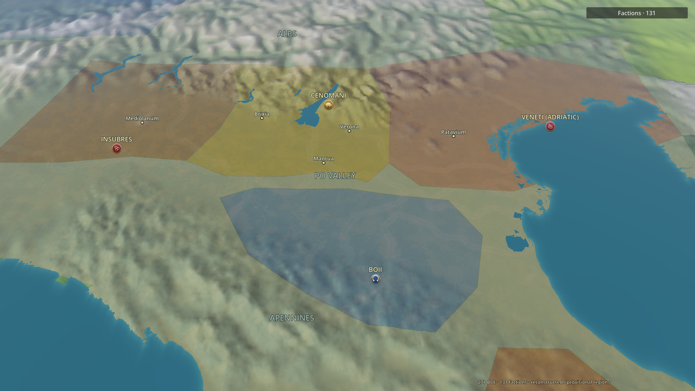
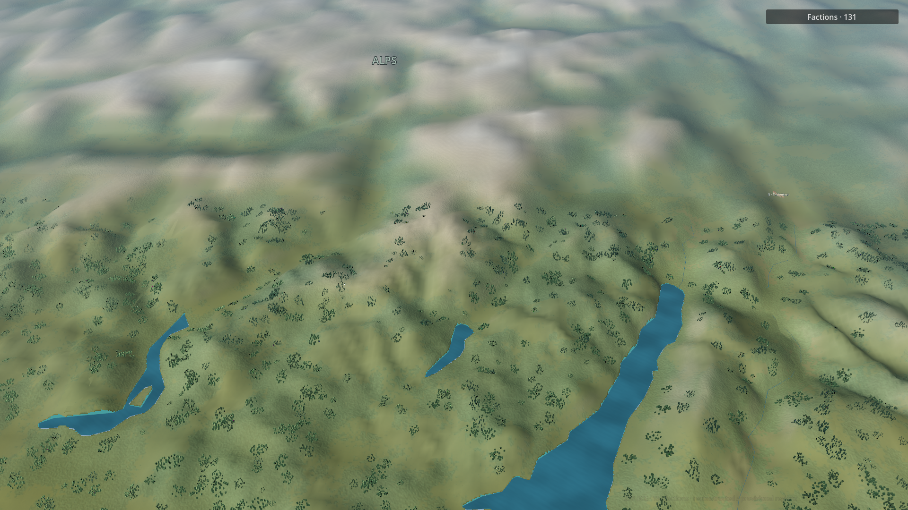
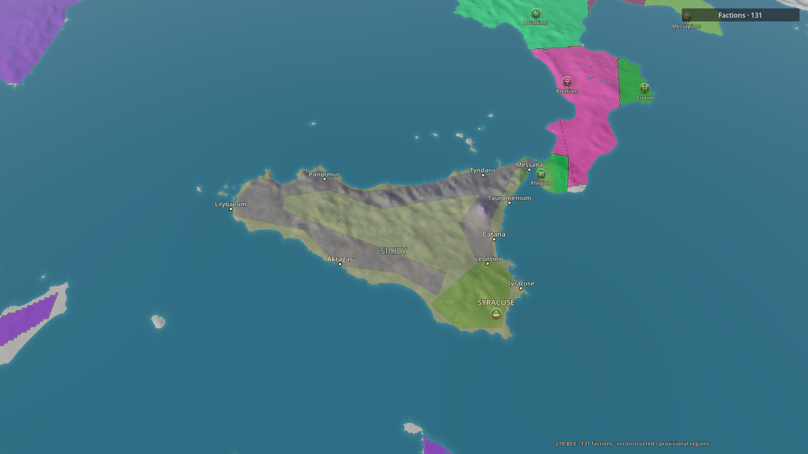
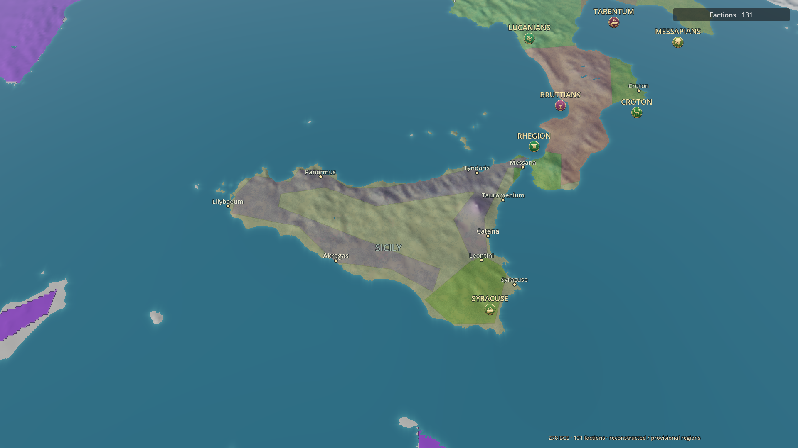
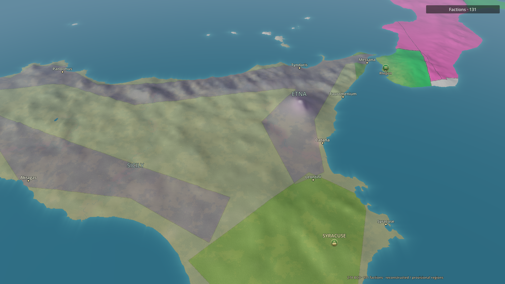
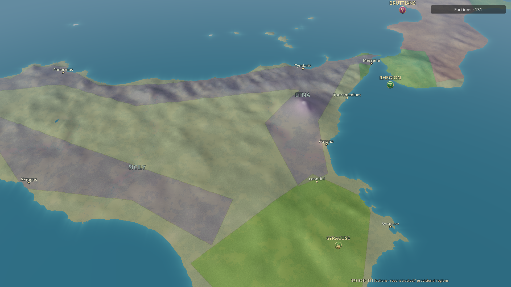
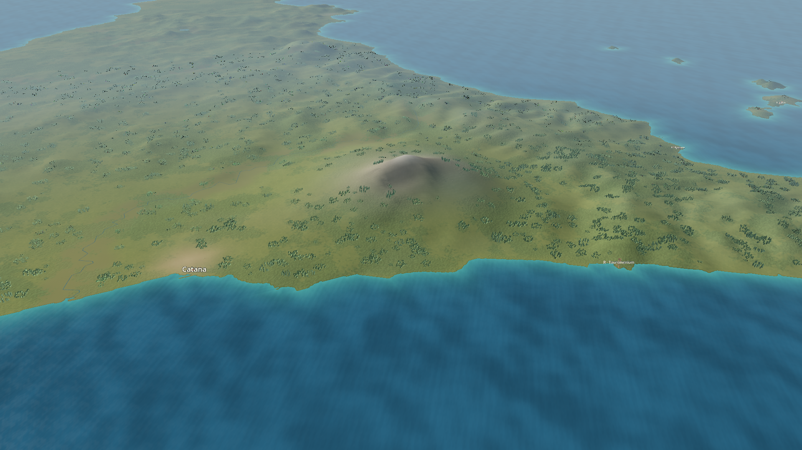
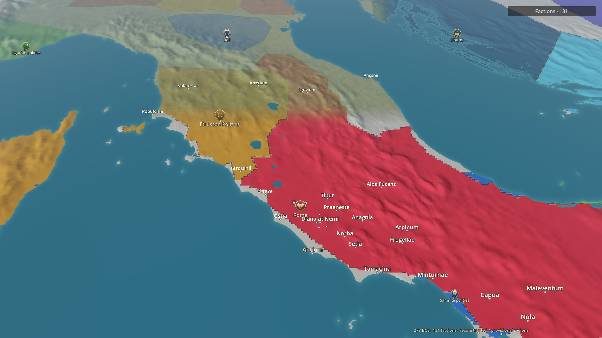
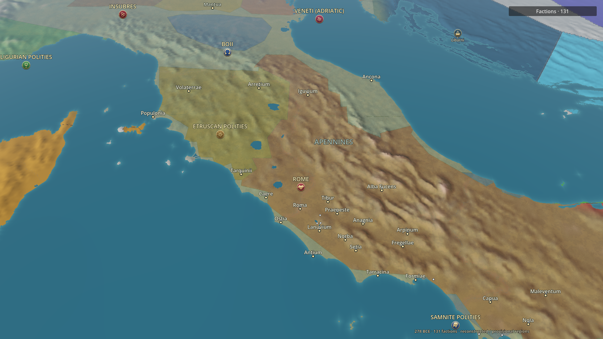
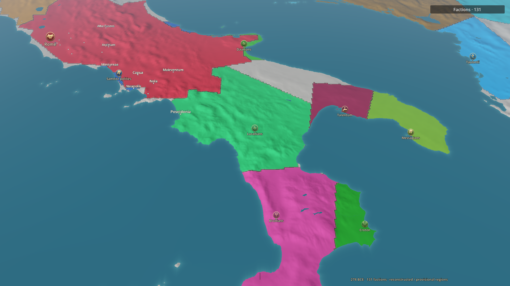
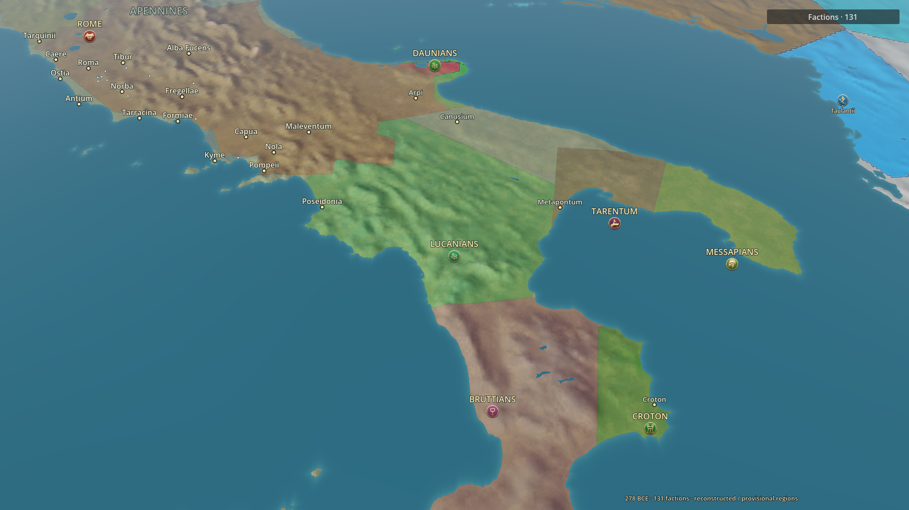
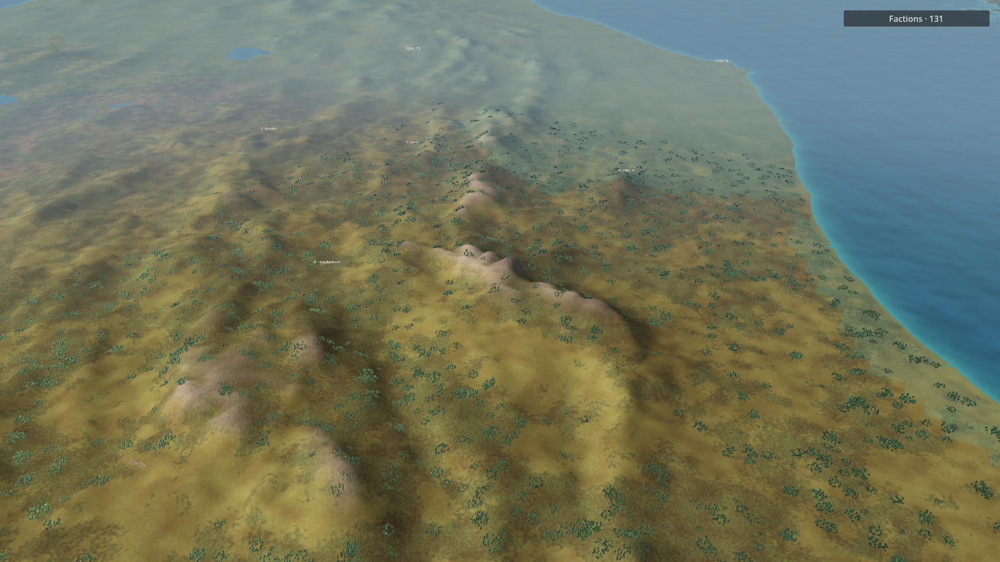
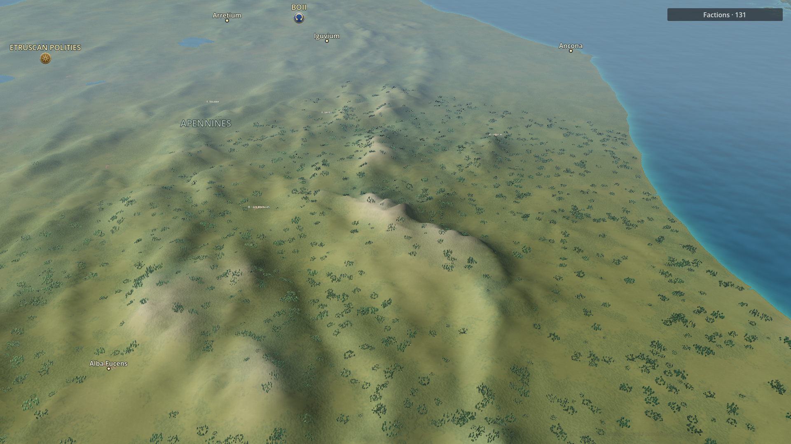
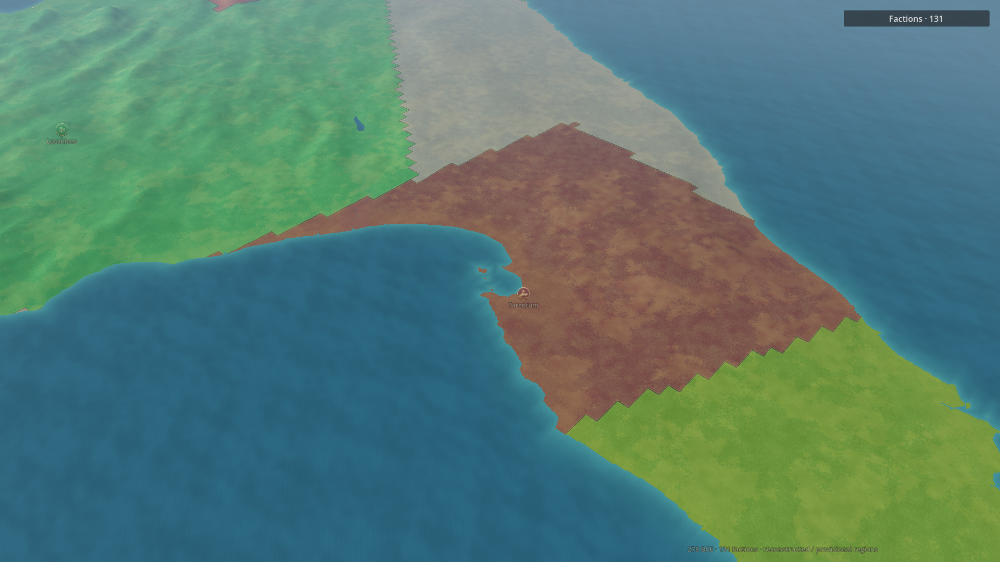
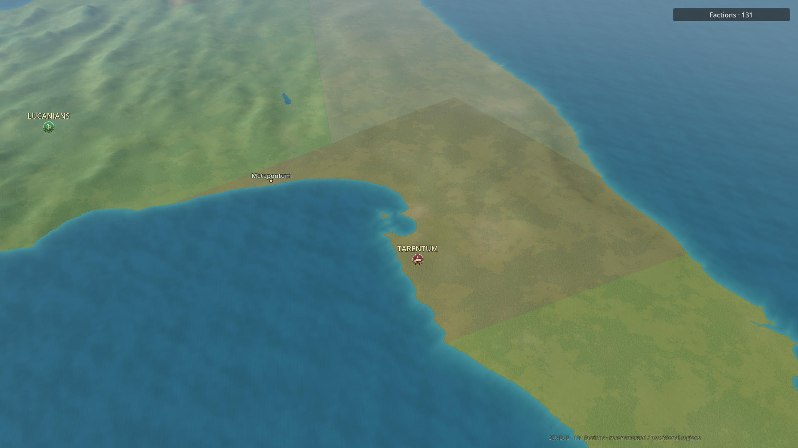
These two images deliberately use nonhistorical temporary assignments to verify isolation. The target and neighboring region initially share an owner; only the target changes afterward. Original owners are restored. This is not a proposed campaign setup.
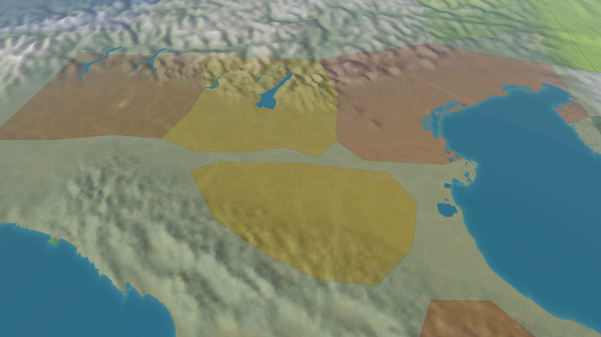
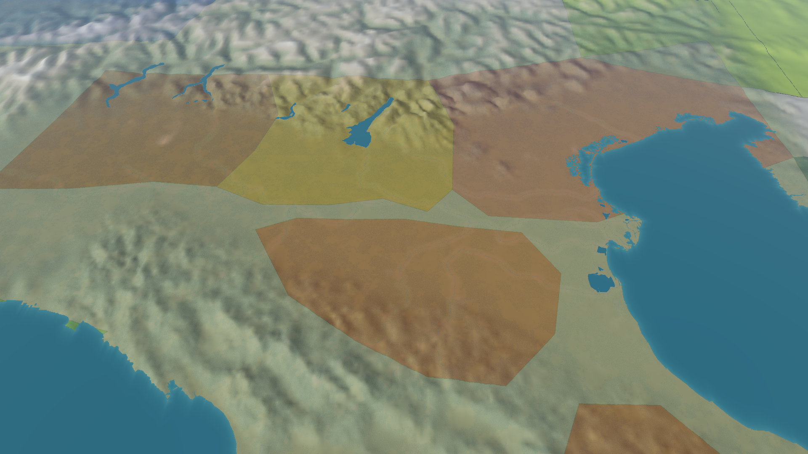
Inspection limits: coarse source polygons and uncertain ownership still need historical review; low-angle relief and vegetation remain coarse; global fallback seams persist. This is a staged improvement, not final cartographic acceptance.